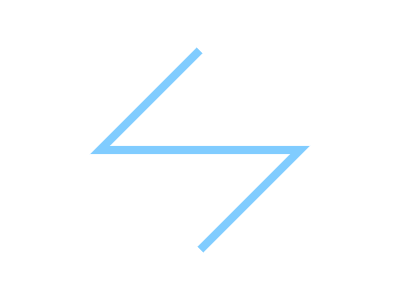
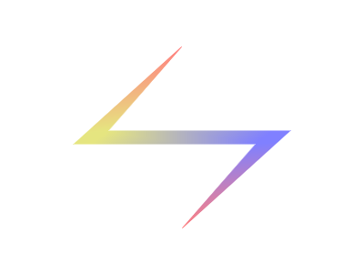
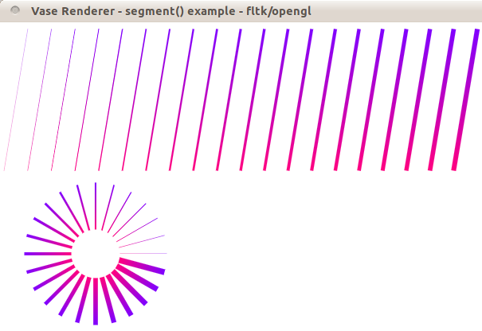

VASEr API reference
Overview
API design
VASEr functions have no state, all stateful operations are put into the class renderer. Thus you need to pass many parameters on each VASEr call, and these parameters are stored in structures. Normally if you do not know what options to set, just put 0 at the parameter polyline_opt*. VASEr ensures empty parameter polyline_opt* options=0 and empty structure polyline_opt opt={0}; are default options and will not cause any error.
Index
renderer
structures
gradient
Image
tessellator_opt
polyline_opt
polybezier_opt
functions
polyline
segment
polybezier
Details
class renderer
class renderer
{
public:
static void init();
static void before();
static void after();
static Image get_image();
};
As stated, all stateful operations are put into the class
| ||||||||||||||||||||||||||
struct gradient
struct gradient_stop
{
double t; //position
char type; //GS_xx
union
{
Color color;
double weight;
};
};
const char GS_none =0;
const char GS_rgba =1;
const char GS_rgb =2; //rgb only
const char GS_alpha =3;
const char GS_weight=4;
struct gradient
{
gradient_stop* stops; //array must be sorted in ascending order of t
int length; //number of stops
char unit; //use_GD_XX
};
const char GD_ratio =0; //default
const char GD_length=1;
A gradient is an array of stops that specify properties at different positions in a one dimensional space. The properties can be color or weight, and the space parameter (unit) can be the length along a curve. The default parameter is ratio, that frankly speaking t=0.5 is midway along the curve. Be aware of the union, which means each stop can only hold one type of information, which must be explicitly specified by Stops of each type must be sorted in ascending order of t, but it is okay for say stops of weight come after stops of color. If there is only one stop of a type, then it is considered constant everywhere. If there is no stop of a type, then no change will be applied. For a concrete example, look at polybezier. | ||||||||||||||||||||||||||
struct Image
struct Image
{
unsigned char* buf; //must **free** buffer manually
short width;
short height;
};
the unsigned char* buf must be freed manually as in malloc/free
| ||||||||||||||||||||||||||
struct tessellator_opt
struct tessellator_opt
{
//set the whole structure to 0 will give default options
bool triangulation;
char parts; //use TS_xx
bool tessellate_only;
void* holder; //used as (VASErin::vertex_array_holder*) if tessellate_only is true
};
//for tessellator_opt.parts
const char TS_core_fade =0; //default
const char TS_core =1;
const char TS_outer_fade=2;
const char TS_inner_fade=3;
a | ||||||||||||||||||||||||||
polyline()void polyline(
Vec2* P, //array of point of a polyline
Color* C, //array of color
double* weight,//array of weight
int length, //length of the array
polyline_opt* options) //extra options
All arrays must be of the same size otherwise memory error will occur.There are 3 other variants if you do not need varying color or weight.
//constant color and weight
void polyline( const Vec2*, Color, double W, int length, const polyline_opt*);
//constant weight
void polyline( const Vec2*, const Color*, double W, int length, const polyline_opt*);
//constant color
void polyline( const Vec2*, Color, const double* W, int length, const polyline_opt*);
Options
struct polyline_opt
{
//set the whole structure to 0 will give default options
const tessellator_opt* tess;
char joint; //use PLJ_xx
char cap; //use PLC_xx
bool feather;
double feathering;
bool no_feather_at_cap;
bool no_feather_at_core;
};
//for polyline_opt.joint
const char PLJ_miter =0; //default
const char PLJ_bevel =1;
const char PLJ_round =2;
//for polyline_opt.cap
const char PLC_butt =0; //default
const char PLC_round =1;
const char PLC_square=2;
const char PLC_rect =3;
const char PLC_both =0; //default
const char PLC_first =10;
const char PLC_last =20;
const char PLC_none =30;
Usage


void sample_polyline1()
{
int size_of_AP=4;
Vec2 AP[size_of_AP];
AP[0].x=200; AP[0].y=50;
AP[1].x=100; AP[1].y=150;
AP[2].x=300; AP[2].y=150;
AP[3].x=200; AP[3].y=250;
Color col={ 0.5, 0.8, 1.0, 1};
polyline( AP, col, 8.0, size_of_AP, 0);
}
void sample_polyline2()
{
int size_of_AP=4;
Vec2 AP[size_of_AP];
AP[0].x=200; AP[0].y=50;
AP[1].x=100; AP[1].y=150;
AP[2].x=300; AP[2].y=150;
AP[3].x=200; AP[3].y=250;
Color AC[size_of_AP];
{ Color col={1 , 0, 0, 0.5}; AC[0]=col;}
{ Color col={.8,.8, 0, 0.5}; AC[1]=col;}
{ Color col={ 0, 0, 1, 0.5}; AC[2]=col;}
{ Color col={1 , 0, 0, 0.5}; AC[3]=col;}
double AW[size_of_AP];
AW[0] = 1.0;
AW[1] = 15.0;
AW[2] = 15.0;
AW[3] = 1.0;
polyline_opt opt={0};
polyline( AP, AC, AW, size_of_AP, &opt);
}
example program is at samples/samples.cpp under VASEr package.
NotesVarying color is stable but will cause overdraw at degenerated cases.Varying weight is stable most of the time but will go wild when extreme case occur. This version of polyline is improved to render dense vertices for curves. Further workAfter solving the above mentioned problems, can provide the choice between color blending profiles, possibly 'hard' and 'soft'. and besides gradient, provide texture along path. | ||||||||||||||||||||||||||
segment()
void segment( Vec2, Vec2,
Color, Color,
double, double, //weight
const polyline_opt*); //same use as polyline
void segment( Vec2, Vec2, Color, double W, const polyline_opt*); //constant color and weight
void segment( Vec2, Vec2, Color, Color, double W, const polyline_opt*); //constant weight
void segment( Vec2, Vec2, Color, double W1, double W2, const polyline_opt*); //const color
segment() is merely a wrapper over polyline(). There are also three variants.
Usage
void sample_spectrum()
{
for ( int i=0; i < 20; i++)
{
Vec2 P1 = { 5+29.7*i, 187};
Vec2 P2 = { 35+29.7*i, 8};
Color C1 = { 1.0,0.0,0.5, 1.0};
Color C2 = { 0.5,0.0,1.0, 1.0};
double W1= 0.3*(i+1);
double W2= W1;
segment(P1,P2, C1,C2, W1,W2, 0);
}
}
void sample_radial_spectrum()
{
for ( double ag=0, i=0; ag < 2*vaser_pi-0.1; ag+=vaser_pi/12, i+=1)
{
double r1 = 30.0;
double r2 = 90.0;
double tx2=r2*cos(ag);
double ty2=r2*sin(ag);
double tx1=r1*cos(ag);
double ty1=r1*sin(ag);
double Ox = 120;
double Oy = 194+97;
Vec2 P1 = { Ox+tx1,Oy-ty1};
Vec2 P2 = { Ox+tx2,Oy-ty2};
Color C1 = { 1.0,0.0,0.5, 1.0};
Color C2 = { 0.5,0.0,1.0, 1.0};
double W1= 0.3*(i+1);
double W2= W1;
segment(P1,P2, C1,C2, W1,W2, 0);
}
}
example program is at samples/samples.cpp< under VASEr package. In the below spectrums, each segment is 0.3 pixel heavier than the previous segment, demonstrating sub pixel accuracy and anti aliasing quality of VASEr.

| ||||||||||||||||||||||||||
polybezier()void polybezier( const Vec2* P, const gradient*, int length, const polybezier_opt*); void polybezier( const Vec2* P, Color, double W, int length, const polybezier_opt*);The P is an array of control points. The evaluated curve is continuous, with adjacent bezier sections sharing a common control point. so n cubic bezier sections require 3n+1 points. A pointer to gradient or constant color and width can be passed in.
Options
struct polybezier_opt
{
//set the whole structure to 0 will give default options
const polyline_opt* poly;
};
Under the hood, bezier curves will be evaluated, and the set of points will be sent to polyline() for rendering, using const polyline_opt* poly as options if specified.
Usage
void sample_bezier1()
{
int size_of_AP=4;
Vec2 AP[size_of_AP];
AP[0].x=200; AP[0].y=50;
AP[1].x=100; AP[1].y=150;
AP[2].x=300; AP[2].y=150;
AP[3].x=200; AP[3].y=250;
Color col={ 0.5, 0.8, 1.0, 1};
polybezier( AP, col, 12.0, size_of_AP, 0);
}
void sample_bezier2()
{
int size_of_AP=4;
Vec2 AP[size_of_AP];
AP[0].x=200; AP[0].y=50;
AP[1].x=100; AP[1].y=150;
AP[2].x=300; AP[2].y=150;
AP[3].x=200; AP[3].y=250;
Color AC[size_of_AP];
{ Color col={1 , 0, 0, 0.5}; AC[0]=col;}
{ Color col={.8,.8, 0, 0.5}; AC[1]=col;}
{ Color col={ 0, 0, 1, 0.5}; AC[2]=col;}
{ Color col={1 , 0, 0, 0.5}; AC[3]=col;}
double AW[size_of_AP];
AW[0] = 1.0;
AW[1] = 15.0;
AW[2] = 15.0;
AW[3] = 1.0;
gradient grad = {0};
gradient_stop stop[10] = {0};
grad.stops = stop;
grad.length = 10;
stop[0].t = 0.00; stop[0].type = GS_rgba; stop[0].color = AC[0];
stop[1].t = 0.50; stop[1].type = GS_rgba; stop[1].color = AC[2];
stop[2].t = 1.00; stop[2].type = GS_rgba; stop[2].color = AC[3];
stop[3].t = 0.00; stop[3].type = GS_weight; stop[3].weight = AW[0];
stop[4].t = 0.33; stop[4].type = GS_weight; stop[4].weight = AW[1];
stop[5].t = 0.66; stop[5].type = GS_weight; stop[5].weight = AW[2];
stop[6].t = 1.00; stop[6].type = GS_weight; stop[6].weight = AW[3];
polybezier( AP, &grad, size_of_AP, 0);
}
Again, example program is at samples/samples.cpp.
| ||||||||||||||||||||||||||